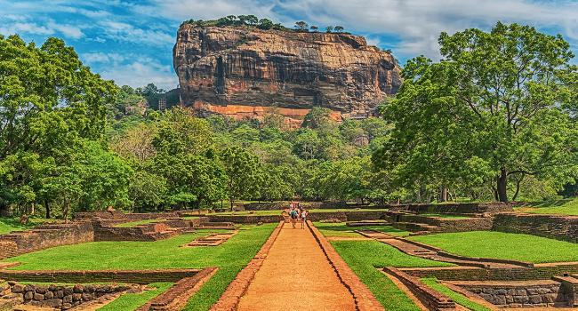

Sri Lanka, A Tourist paradise
The Temple of the Tooth Relic

The Temple of the Tooth Relic situated in the city of Kandy. The sacred Tooth Relic of the Buddha is kept here. It is one of the holiest places of worship for Buddist around the world.
Peradeniya Botanical Garden
.jpeg)
The Peradeniya Botanical Garden is the largest botanical garden in Sri Lanka providing residence to over a large variety of plants.
Hortan Plains
.jpeg)
Horton Plains is a national park in Sri Lanka located in Nuwara Eliya. World's End and Baker's Falls are tourist attractions of the park.
Sigiriya

Sigiriya also known as the Lion's Rock is a rock fortress and a palace located in the Matale district of Sri Lanka. This is surrounded by gardens and ponds. Sigiriya was built by King Kassapa. It is included in World Heritage site.
Galle Fort
.jpeg)
The Galle Fort built by the Portuguese in 1588. It has been given the title of Unesco World Herritage Site. It's a beautiful travelling location which gives you a experience that's hard to forget.
Sri Pada
.jpeg)
Sri Pada is the fourth highest mountain with the height of 2244m and located in Ratnapura district. It has the footprint of the Lord Buddha. People hiking the mountain from December to May.
Anuradhapura
.jpeg)
Anuradhapura is one of the ancient city in Sri Lanka. There are many religious and historical places in Anuradhapura. They are Sri Maha Bodhi, Ruwanwelisaya, Thuparamaya, Lovamahapaya, Jethavanaramaya, Mihinthale etc.
Polonnaruwa

The ancient city of Polonnaruwa has been declared a World Heritage site by UNESCO. The Lankathilaka temple, statue of the Buddha made from stone and Parakrama Samudraya is located here.
Kataragama
.jpeg)
Kataragama is place of pilgrimage for a variety of religions. It is located in south-east corner of Sri Lanka. Kiri Vehera dagoba and Menik river is located close to Kataragama temple.
Arugam Bay
.jpeg)
Arugam Bay one of the most beautiful beach is located in southeastern of Sri Lanka. It is famous for surfing.
Nilaveli
.jpeg)
Nilaveli is located norh-west. It is one of the most beautiful and finest beach in Sri Lanka renowned for its soft white sand. Wind surfing and diving are very famous in Nilaveli.
Pasikudah
.jpeg)
Pasikudah is the beautiful beach along with coral reefs located in Baticola district. It is great place to enjoy holidays.
Dunhinda Falls
.jpeg)
Dunhinda falls located just 5km from Badulla. The fall which is 63m in height is formed by Badulu Oya.
Diyaluma Falls
.jpeg)
Diyaluma falls located on the Beragala-Wellawaya road. It is 171m in height and formed by the waters of the Punagala Oya. It flows like a bridal veil over the hard rock slab, into a deep pool.
Bambarakanda Falls
.jpeg)
Bambarakanda falls is the highest fall in Sri Lanka. It has 294m in height. It is located in the Kalupahana area.
Wasgamuwa National Park
.jpeg)
This is one of the place in Sri Lanka where elephants can be seen in very large numbers and is also considered as one of the important bird areas in Sri Lanka. It is home for 23 species of mammals. Number of bird species recorded from the park is 143.
Yala National Park
.jpeg)
Yala National Park is situated in the south-east region of sri Lanka. It is especially famous for the bird sanctuary. It is home to elephants, leopards and deers etc.
Kumana National Park
.jpeg)
Kumana National Park is located in the south-east corner of sri Lanka About 32 species of mammals, 125 species of birds and many reptiles have been recorded in the park.
Connect

.png)
Contact
- No.27, Galle Road, Colombo 07.
- +94 702568942
- travelsrilanka@gmail.com